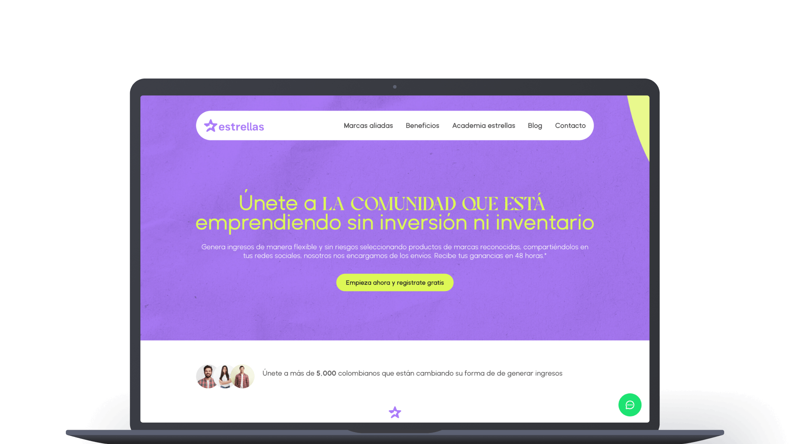
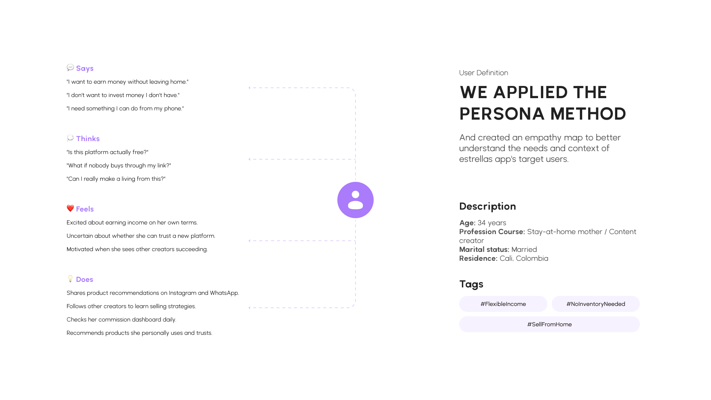
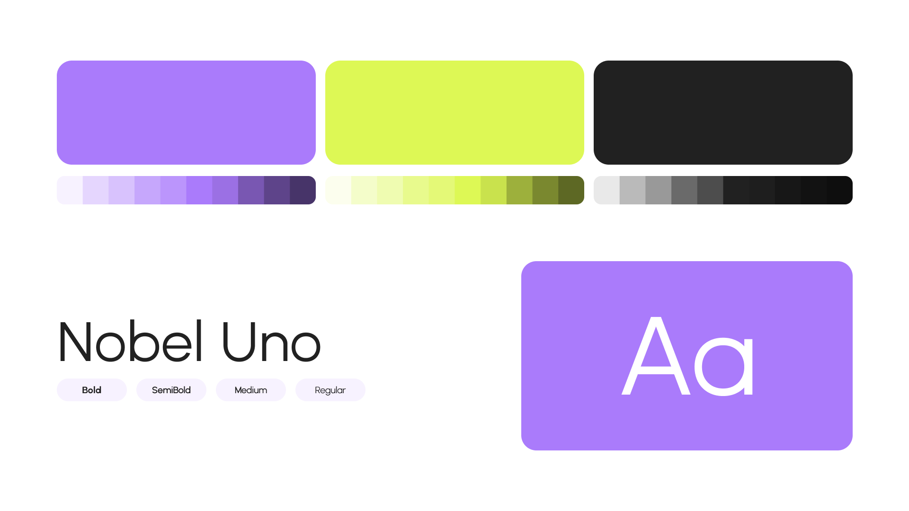
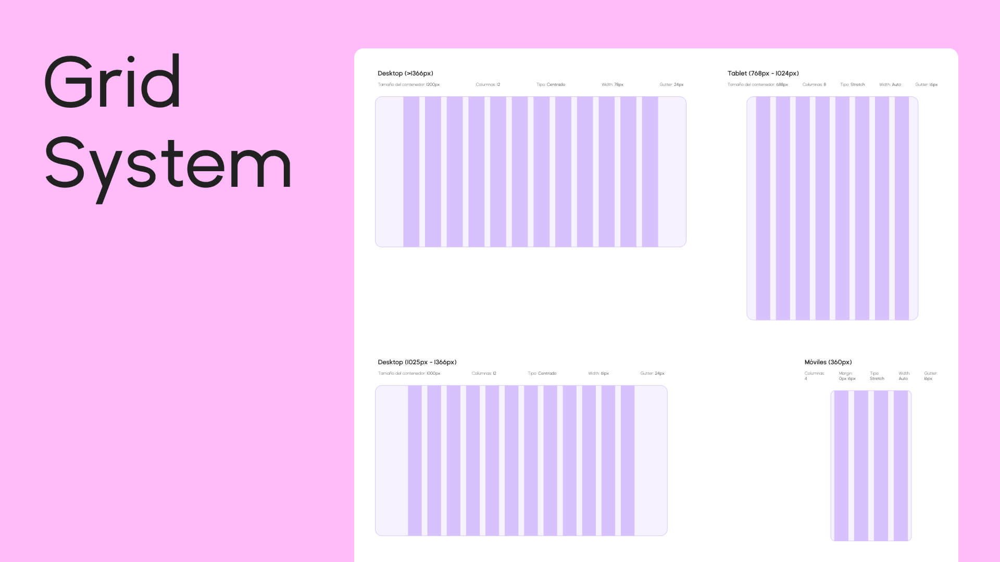
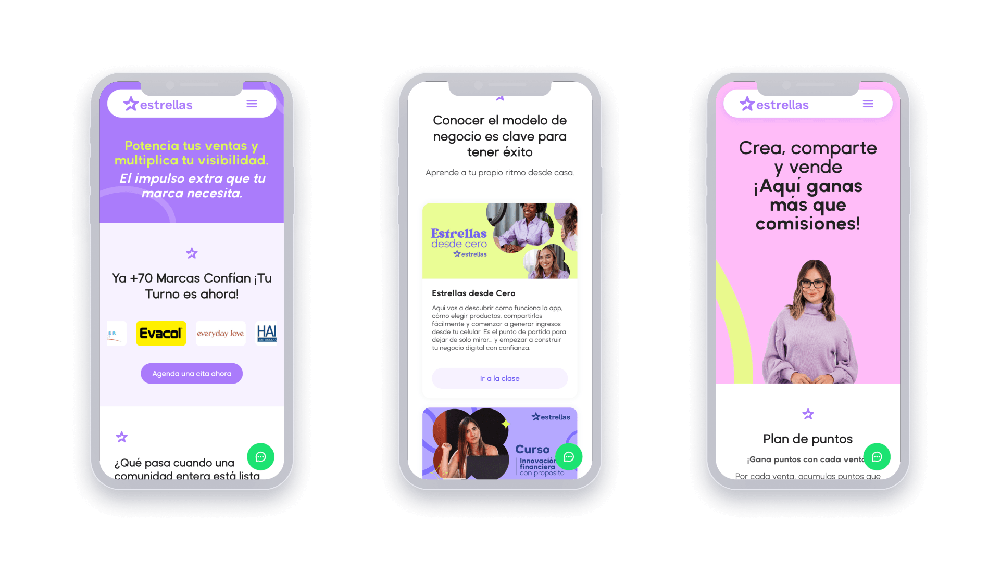
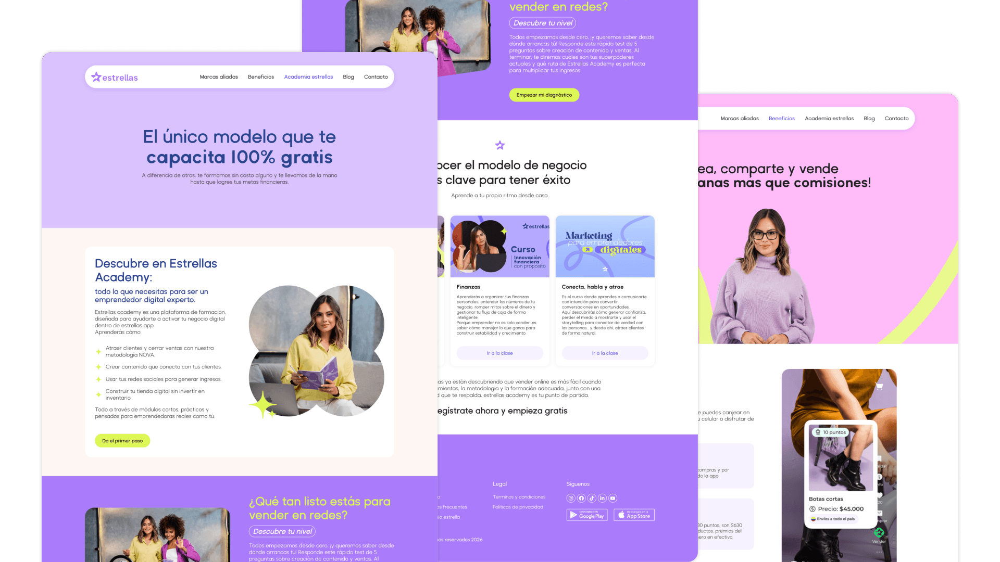

estrellas app
A social selling platform empowering women to turn product recommendations into real income.

estrellas app is a Colombian social selling platform that connects women creators with established brands. Creators choose products they love, share them through their social media, and earn commissions on every sale — while estrellas handles inventory, shipping, payments and post-sale support.
Goal
Design and build a website that communicates the value of estrellas app to two distinct audiences — creators looking for flexible income and brands looking to expand their reach — while reflecting the platform's brand identity and growing community.
My role
I led UX research and UI design for the entire website, and developed it on WordPress using Elementor. I was involved end-to-end, from understanding both audiences and shaping the visual direction, to building the responsive site and shipping it to production.
Audience
The website serves two clearly defined audiences with very different needs.
Creators — primarily women in Colombia, ranging from students and stay-at-home mothers to content creators, looking for flexible income without upfront investment. They need to quickly understand what estrellas app is, how it works, and feel confident enough to register.
Brand partners — Colombian brands and authorized distributors interested in expanding their reach through trusted recommendations. They need clarity on how the partnership works and the credibility behind the platform.
Designing for both groups meant balancing emotional, aspirational language for creators with clear, trust-building information for brands — without making either feel secondary.

Research
Before opening Figma, I spent time understanding the social selling space and the people involved in it.
I explored similar platforms in Latin America to map common patterns, blockers and opportunities. I reviewed user feedback from estrellas app's existing community on social media and Google Play, and worked closely with the marketing team to understand what real conversations with creators sounded like — their doubts, their wins, the language they used.
Key findings that shaped the design:
- Creators needed reassurance that the platform was free, low-risk and required no inventory — these were the biggest perceived barriers.
- Trust signals (real testimonials, brand logos, total community size) were essential to convert visitors into registrations.
- The "How it works" flow needed to be visible early on — most users wanted to understand the model before committing to register.
- Brands and creators consume information differently, so the page structure had to guide each one to the right content without friction.
Visual explorations
The brand already had a defined identity — warm, vibrant, aspirational — so my job was to translate that into a website that felt premium and credible without losing the energy of the community behind it.
I explored several directions for the hero, balancing bold typography with photography of real creators, and tested different ways to introduce the value proposition above the fold. I also iterated on how to present the "How it works" section, comparing step-by-step layouts versus a more visual, interactive approach.
Decisions were made with mobile-first in mind. Most of the audience accesses the site from a phone, so every layout was tested at small breakpoints before scaling up.


Final design
The final website tells a clear story: what estrellas app is, who it's for, how it works, and why creators trust it.
The home page leads with a direct value proposition, supported by testimonials from real users to build credibility from the first scroll. Secondary pages — Marcas aliadas, Beneficios, Academia estrellas, Blog and Contacto — give each audience a dedicated space to dive deeper, while keeping a consistent visual language across the site.
The site was built in WordPress with Elementor, using a custom design system based on the brand's tokens. This setup allowed the marketing team to update content independently while keeping the design integrity intact.


Learnings
Designing and shipping the same project end-to-end taught me how much closer design and implementation can be when one person owns both. Decisions about spacing, type and components weren't made in isolation — they were made with their build cost in mind, which led to a cleaner system in the end.
The other big takeaway was around speaking to two audiences at once. Trying to please everyone with the same message usually pleases no one. The clearer I was about who each section was for, the better the page worked as a whole.
See the result ↗